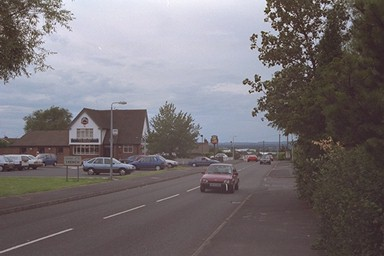

 Everything hereabouts is modern, but the name of the pub preserves the memory of the canal. There are a couple of older houses down the hill past the pub - too far down to be anything to do with it, I think.